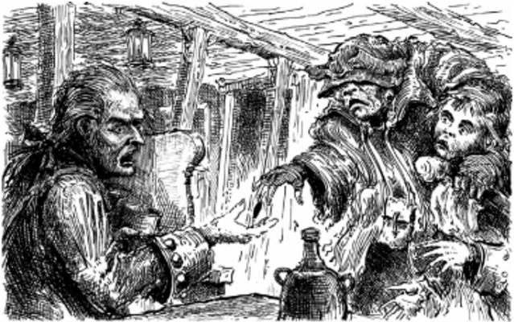
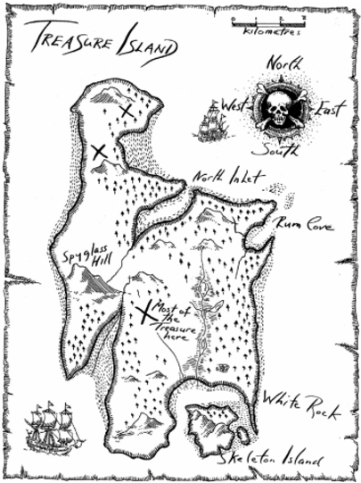

3
The Black Spot
Later that day, I took the captain a cool drink.
‘Jim,’ he said, ‘you’re the only person here worth anything. You’ll bring me some rum, won’t you, boy?’
‘The doctor said – ‘ I began.
He swore about the doctor. ‘Look, Jim, one glass is all I ask. I’ll pay you for it.’
‘The only money I want,’ I said, ‘is the money you owe my father. But I’ll get you one glass of rum, no more.’
He was grateful and drank it quickly. ‘Did the doctor say how long I must lie in my bed?’ he asked.
‘A week,’ I told him.
‘A week!’ he cried. ‘I can’t do that. They’ll have the black spot on me by then. They’ll come for me.’
‘Who will? Black Dog?’ I said.
‘Yes, but there’s worse than him. It’s my old sea-chest they want, but I’ll show them! Jim, if I get the black spot, you go to that doctor. Tell him to bring a crowd of law officers and a local judge to the inn. They can catch Flint’s crew – all that are left – at the Admiral Benbow. I was Flint’s first ship’s officer, and I am the only one who knows the place. He told me when he was dying. But don’t call the law unless they give me the black spot, or if you see the seaman with one leg – he’s worse than any of them.’
‘But what is the black spot, captain?’ I asked.
‘That’s a message, boy. I’ll tell you if they give me that. Keep your eyes open, Jim, and I’ll give you half of everything I have.’ He talked for a little longer then fell into a heavy sleep, and I left him.
That night, my father died. This put all other thoughts to one side and I had no time to worry about the captain.
The next morning, the captain came downstairs. He didn't eat much food but he drank more rum than usual. He helped himself and we were too busy to stop him. There were visits from neighbours, and my father’s burial to arrange.
The day after the burial was cold and foggy. At about three o’clock in the afternoon, I was standing at the door of the inn when I saw a blind man coming along the road. He was feeling his way with a stick.
‘Will any kind friend tell a poor blind man where he is?’ he said.
‘You’re at the Admiral Benbow inn, Black Hill Cove, my good man,’ I said.
‘I hear a young voice,’ he said. ‘Will you give me your hand, my kind young friend, and take me inside?’
I held out my hand, and the terrible, soft-speaking, eyeless man took hold of it like a dog biting a bone. He pulled me violent towards him.
‘Now, boy,’ he said, ‘take me to the captain or I’ll break your arm!’ And I had never heard a voice so cruel and cold.
I was so frightened by the blind man’s violence that I obeyed him without question, and took him into the room where the sick captain was sitting. He saw the blind man and a look of fear passed across his face.
‘Sit where you are, Bill,’ said the blind man. ‘I can’t see, but I can hear a finger move. Hold out your right hand.’
I watched him put something in the captain’s hand. ‘And now that’s done,’ said the blind man, and he quickly went out of the inn. I heard his stick tap-tap-tapping away along the road.
the captain opened his hand and looked into it. ‘Ten o’clock!’ he cried, and jumped up. He put his hand round his neck, made a strange sound, and fell face down on to the floor.
I ran to him, calling to my mother. But the captain was dead.
Previous Chapter